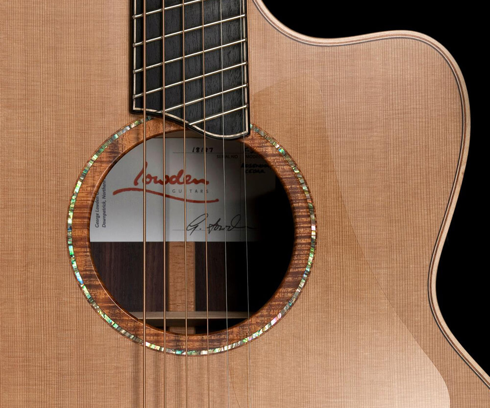
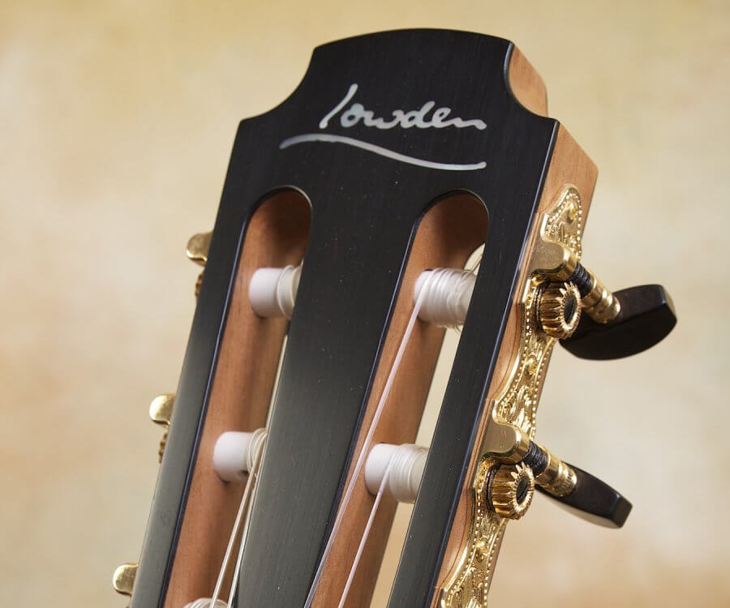
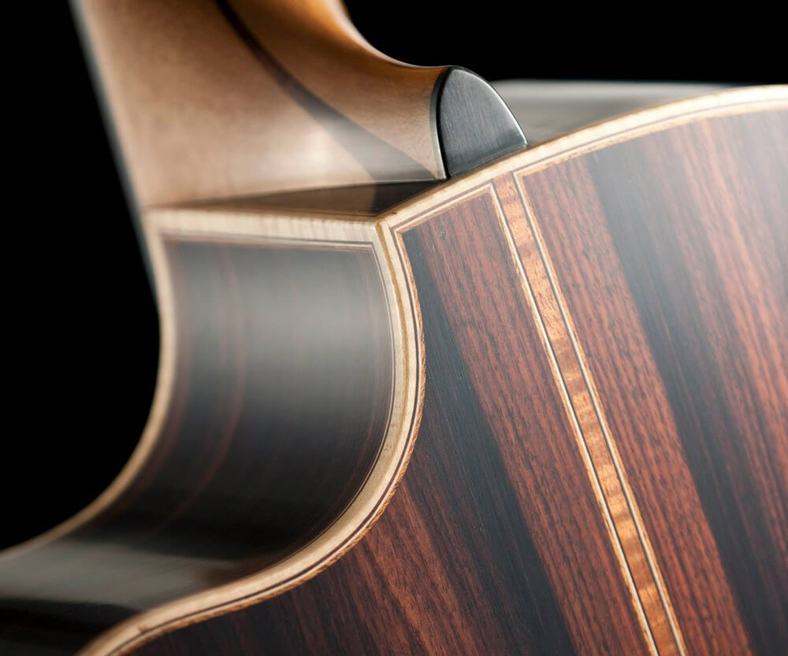
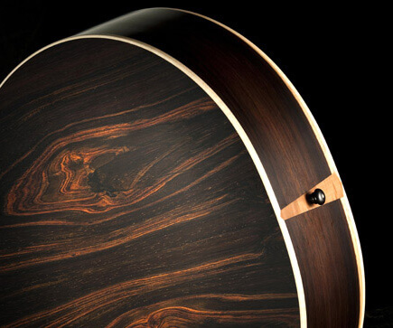
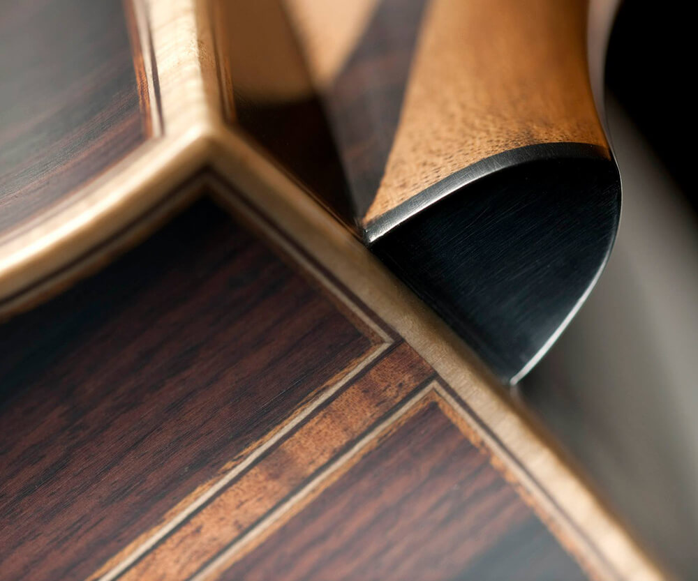

50 Series Photo1
East Indian Rosewood / Cedar

50 Series Photo2
George Lowden Guitar
Lowden 50 Series
East Indian Rosewood / Cedar
Model show: F50 IR/C fan fret
Click Photo

50 Series Photo3
F-50 Cocobolo

50 Series Photo4
Adirondack with soundbox bevel

50 Series Photo5
Tasmanian Blackwood and Adirondack